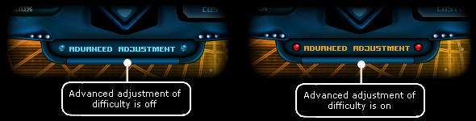
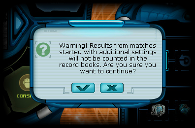
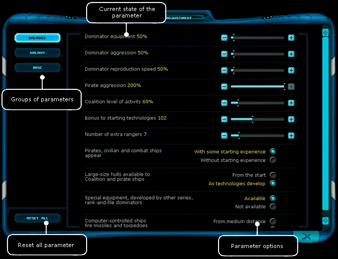

| Advanced adjustment If you check the "advanced adjustment" option during new game creation, after pressing the “Next” button the advanced adjustment mode will be activated. |

|
 If this is a no problem for you, hit the “Next” button and agree with the popup warning. After this, warning windows will close and the “Next” button moves you to advanced adjustment screen.
After pressing the “Next” button, the window appears:
 There are several blocks of settings to adjust: Balance • Dominator equipment - adjusts level of Dominators ship equipment. • Dominator aggression - adjusts intensity of steel machines attacks and its rate. • Dominator reproduction speed - adjusts speed of building new Dominator ships. • Pirate aggression - adjusts intensity of pirate attacks and its rate. • Coalition level of activity - general parameter, adjusting rate of military operations.. The larger value means more activity for Coalition trying to free the star systems. Does not affect to ships amount and their equipment. • Bonus to starting technologies - sets the level, which will be a starting point to a technology in a game Universe. The maximum value means access to best equipment right away. • Number of extra rangers - on average, maximum number of rangers in game is equivalent to amount of Coalition controlled systems, about one ranger for a system. This parameter gives you the power to increase the number of rangers. • Pirates, civilian and combat ships appear: With some starting experience / Without starting experience - sets, will the new-born ships have experience points. If the second option is selected, their skills won’t be evolved, otherwise the AI pilot can distribute experience and adjust their skills at own will. • Large-size hulls available to Coalition and pirate ships: From the start / As technologies develop - sets, how fast AI pilots starts to use heavy, armored but low-speed cruisers: from the beginning of the game, or later. • equipment, developed by other series, ank-and-file dominators: Available / Not available - differentiates development of the Dominators-only weapons to its series. If “Not available” option selected, the Torpedo Tube will be only available to Blazer series, IMHO-900 to terron series, and Vertix to keller series. • Computer-controlled ships fire missiles and torpedoes: medium distance / From maximum distance /b>- - sets how far the AI pilot should be from its target to use missile-type weapons. Galaxy • Number of asteroids - amount of asteroids in space, 100% - normal value. • Damage from stars - damage taken from the heat emitted by close star. . • Relative concentration of agrarian planets in the Galaxy - correlation between agrarian planets and planets with different economics type. Maximum value is 10, but crucial point is the ratio between all three economic types parameters. For example, if this setting sets to 10, and other two to 0, all planets in the Galaxy will be agrarian. • Location of the player's starting system: In a far corner / In the center - sets the position of the sector, where player will start. If the first option is selected, the sector will be placed at the outskirts of the Galaxy, and player’s home planet will be in on one of the capital systems. Otherwise, the player will start at random sector closest to the map center. • • Relative concentration of industrial planets in the Galaxy - - correlation between industrial planets and planets with different economics type. Misc • Results of random events: Changes when loading a saved game / Does not change when loading a saved game - turns off and on the possibility to change random generation value by loading a saved game. • Construction of stations: Close to center / In a random spot in the system - sets the coordinates of space stations in the system.. • Far from the player's station: Skip fire / Fight normally - - if the first option is selected, stations will attack hostiles only one time of third. This will gave AI ships an advantage in attacks without player. Otherwise, station defense style won’t be changing as compared to seen by player himself. • Space stations can receive new equipment: Only with the player's help / From own store - by default (the first option), stations starting equipment will be used at it during the whole lifecycle of the base, and only the player can change, repair or upgrade it. The second option gives stations the ability to refresh its equipment, using their own store. However, if player will do it by himself, while this option is active, the station will stop to use its store in future. • Old unique hulls (Boline, Assassin, Rock): Exist in the game / Absent from the game - three super-ships (Boline, Assassin, Rock), included in the game in “Reboot” addon are disabled by default in SR HD due to balance reasons, but you can return them, by setting this parameter. • Amount of acrynic goods in store - sets the percentage of acrynic equipment at stations store. If the maximum value is set, stores will have only unique acrynic equip. • Amount of nodes dropped by dominators - sets the percentage of nodes, dropped by hitting dominators. 100% is a base value. • Drop rate: Limited by tech level / Unlimited - ffects the loot, dropped by the dominators. • Maximum cost of dropped items - affects the cost of loot, left after ship destruction. • Quality of equipment dropped by enemies in black holes - affects the level of equipment, dropped after defeating all enemies in black hole. • Enemy endurance in black holes - affects the black hole ship’s hull strength. • Enemy damage in black holes - affects the black hole ship’s firepower. • Enemies in black holes: Acting together / Feuding - if the second option is selected, enemies in black holes fights “deathmatch” mode, attacking each other and player. The first option is default, the only enemy for AI is the player. • Amount of objects in the system after which the pilots begin to shoot them down - after reaching the selected amount of objects in the system, AI pilots starts to shoot it, however, goods will be left untouched, if the amount is lower than the selected threshold. • Battles with hyper-pirates when traveling between systems: OFF / ON - turns on or off hyperspace travels between the systems like in original Space Rangers (with hyper-clots). • Sale of nodes on pirate bases: ON / OFF - - if sets to “ON”, pirates will be glad to sell you some false nodes (for a credits, of course), which can be used like a genuine one. • Computer players receive equipment: Through own channels / Buy in stores - - technical progress is always a challenge, so ship`s equipment becoming out of date, while the world growths. AI pilots needs to change it, so they can compete the player as before. For this need, they can use their own channels, which, basically, has more advanced equipment, than a store. If the second option is selected, computer pilots will be equate to the player, and will use only store items, devastating the store. So the player should be on the look-out, and don’t miss a good gun! Reset all - is not a settings block, but a button, resetting all parameters to their default values. After completing the adjustment, you should press the “Next” button in a right-bottom corner of the screen, and then world generation will begin. | |||||